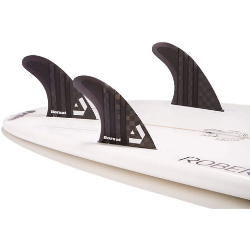

Clique nas áreas destacadas em vermelho

O uso das quilhas são de extrema importância, em uma triquilha,a quilha do meio dá estabilidade enquanto as laterais tem uma função de propulsão,te dão mais velocidade.
Há diversos tipos,modelos de rabetas,cada uma exercendo uma função,para saber mais sobre esses tipos e função Clique Aqui

O uso do Leash,Strep ou cordinha como bem entender,é de extrema importância para a segurança no surf,tanto para você quanto para quem está ao redor de você,ela fica presa ao corpo do surfista mantendo sempre a prancha por perto ,numa eventual queda da prancha,se você for muito fundo, você tera como base a cordinha e assim irá escalar em direção a sua prancha,além de caso não surfe com o Strep, evita acidentes como a prancha sair do seu domínio e eventualmente bater em alguém no pico.

O bico é a ponta da prancha,podendo ser pontudo ou redondo dependendo do tipo de prancha. O bico mais redondado te dá uma melhor estabilidade na prancha e também uma projeção melhor na remada,muito usado por surfistas iniciantes ou que curtem um surfe mais tranquilo,já o bico pontudo, ele exige mais remada e equilíbrio,há uma versatilidade maior dentro da água,muito usado por surfistas mais experientes.
O uso da parafina é de tal importância pois dá aderência onde coloca os pés,geralmente passam nas bordas também onde fica a pegada das mãos na hora do drop,há diversos tipos e marcas de parafina.

O Deck como a pafarina, te dá uma aderência melhor na prancha, sendo usado em stand up paddle e até mesmo na parte de trás da prancha de surf, muito usado na pranchinha também , tipo de prancha que exige mais equilíbrio e técnica,usada por surfistas que costumam andar pra frete e pra trás em um eventual pico de tubo.